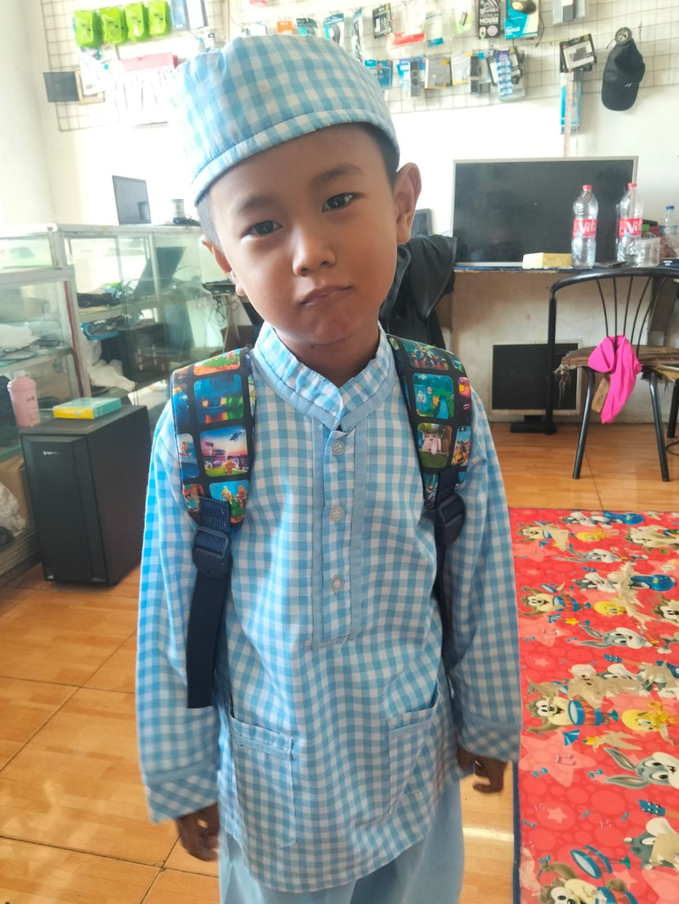

بسم الله الرحمن الرحيم
Undangan Walimatul Khitan
SABTU, 03 JANUARI 2026

Dema Hendra Al Faruq
Putra Bpk. Akhmad Sulkhan & Ibu. Tri Wayuningsih
(Cucu dari Bpk. Sahrudin / Aceng)
SABTU, 03 JANUARI 2026
Putra Bpk. Akhmad Sulkhan & Ibu. Tri Wayuningsih
(Cucu dari Bpk. Sahrudin / Aceng)
"Ya Allah, muliakanlah anak kami, panjangkanlah umurnya, terangilah hatinya, teguhkanlah imannya, perbaikilah amal perbuatannya, lapangkanlah rejekinya, dekatkanlah pada kebaikan, dan jauhkanlah dari keburukan."
"Ya Allah kabulkanlah permohonan kami, ridhoilah keinginan kami dan terimalah amal kebaikan kami. Semoga Engkau melimpahkan sholawat dan salam atas junjungan Nabi Muhammad SAW, keluarga dan para sahabatnya. Aamiin."
- Keluarga Besar Bpk. Sulhan & Ibu Ayu -
Menuju Hari Bahagia
KP. GEDONG RT.03/04 KEL. KEMIRIMUKA
KEC. BEJI, KOTA
DEPOK
(Posyandu Jati RW 4)
Tanpa mengurangi rasa hormat, bagi Bapak/Ibu/Saudara/i yang ingin memberikan tanda kasih untuk putra kami, dapat melalui:
a.n Tri Wahyuningsih